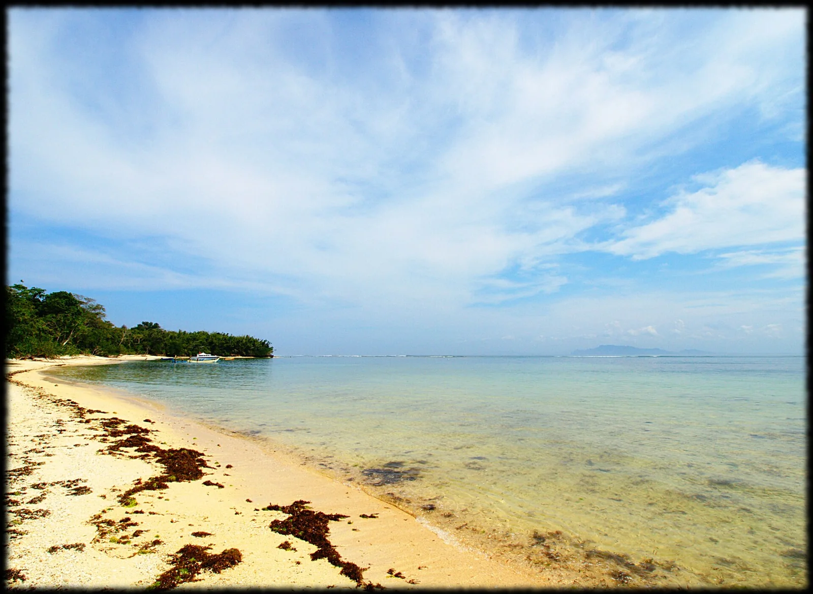

G-Land — Plengkung
Java, Indonésie · surf

Une gauche interminable qui déroule le long d'un récif, au bord d'un parc national où la jungle descend jusqu'à la plage. On n'y accède que par bateau.
- Lieu
- Java, Indonésie
- Niveau
- Expert
- Activités
- surf
- Type d'eau
- Mer / océan
- Coordonnées
- -8.72, 114.35 (position approximative du secteur)
Dangers à connaître
- Récif peu profond sur toute la longueur.
- Site isolé dans un parc national, pas de secours immédiats.
- Sections très rapides par grosse houle.
Le conseil d'Ocean Buddy
Repère les trois sections depuis la plage avant de ramer : elles ne se surfent pas pareil.
Ouvrir dans Ocean Buddy Télécharger sur l'App Store
Source : Description historique Ocean Buddy · vérification externe en attente.